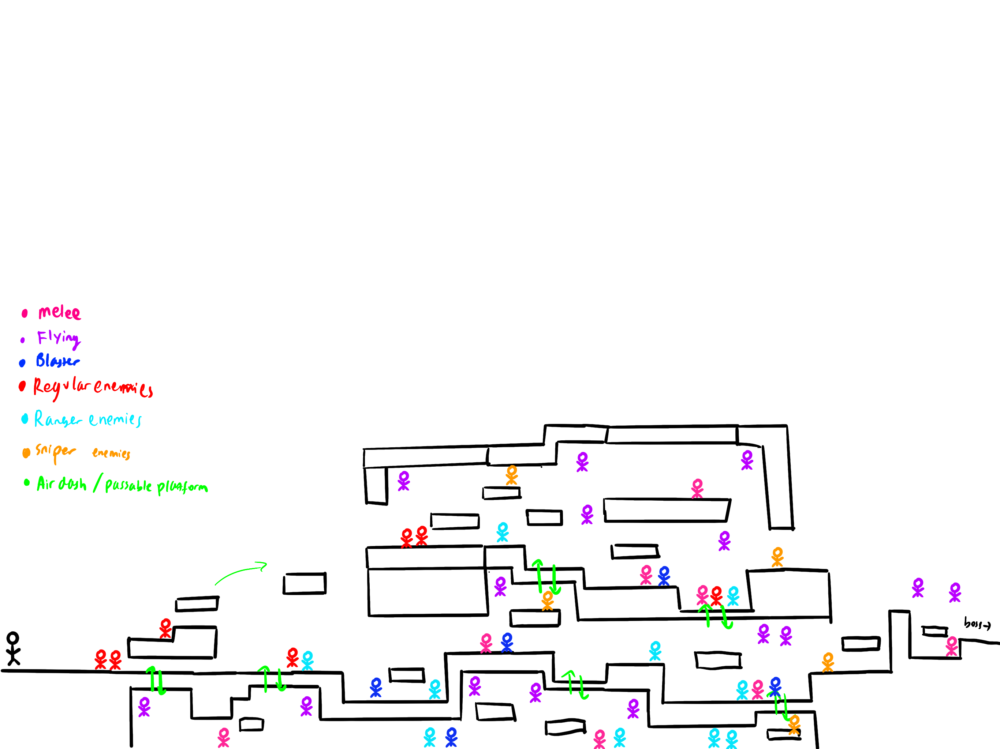

Kitsune Rush
An IAT 410 project. Created alongside Para Upton, Harry Shiu, Elom Paradis
Kitsune Rush is a fast paced 2D side scrolling roguelike platformer couch co-op game where the players work together to invade a mega-corporation's headquarters. It can be played by up to four players. Players need to work alongside each other to defeat the enemies in order to reach the final boss in every stage.
Responsibilities
- Level Design
- Weapon Ideation
- Core Mechanics
- Implementing shop mechanics
Main Process
This project was created using Unity in C++ language. One of my team members and I decided to do pair programming during the backend process so that it is easier to bounce ideas off each other. Furthermore, it is to hasten the quality check and debugging process of the project. I was mainly responsible for the shop's mechanic of the game.
Design Challenges
- The height of the level is not adjusted.
- Implementing the cutscene
- Adjustment to the core mechanics
Level Design
Ideation process
As for the level design process I took inspiration from Mario games on how to design the platforms. I used Procreate to sketch out the placements of the platforms and the enemies in each level. Furthermore, to ensure that the game is engaging to the players, the difficulties progress as the players move along the level.
Implementation
By using the assets that one of my team members have created, I proceeded to design the levels in the game itself by using Unity. While implementing the tiles, I encountered some problems such as the space between the platforms are not large enough for the player to go through, or it is too far tall for the players to jump on. To encounter these problems, I made adjustments to the placement of the platforms.
Weapon Ideation
Our team decided to implement two types of weapons, the main weapon that fires automatically and the sub weapon that can be triggered using a press of a button. I was mainly responsible for generating the ideas for both types. Out of all the ideas, we selected 6 weapons and 2 sub weapons. My team member was responsible for designing them while my other team members and myself were responsible for the implementation in Unity.
Shop Implementation
For the shop's implementation, I have created a random chance generator that allows the items to be cycled based on the drop rate. As a team, we decided to increase the likelihood of getting a weapon rather than a sub weapon. This was caused by the fact that the sub-weapons were designed to be more powerful than the weapons themselves. The random chance generator that I have created is also used as a base for the drop rate upon an enemy's death.